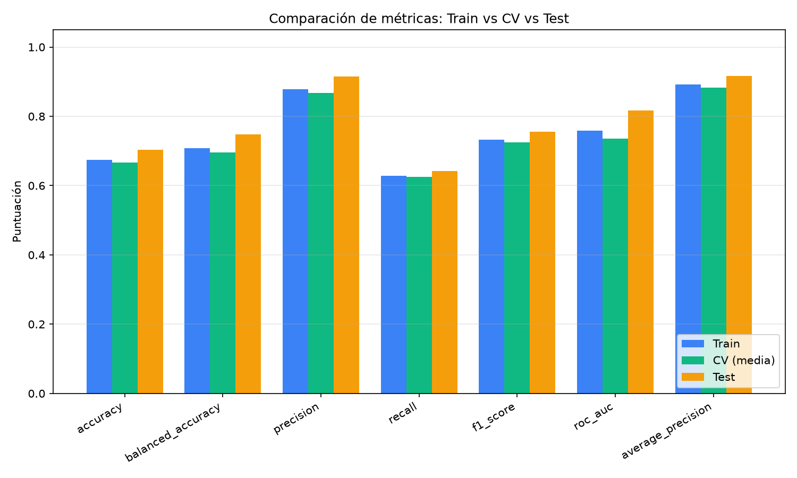
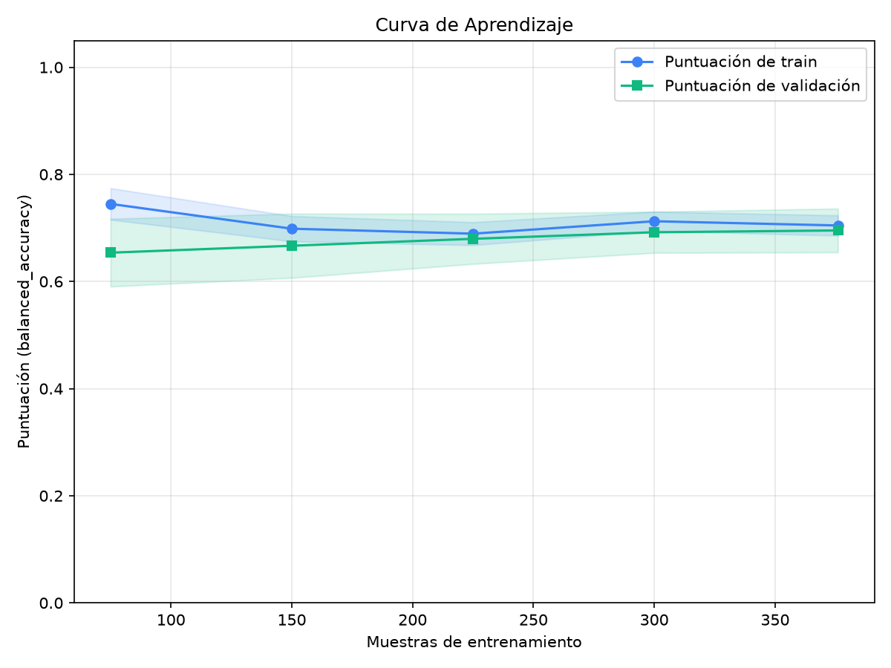

| Métrica | Train | CV (media ± std) | Test |
|---|---|---|---|
| accuracy | 0.6745 | 0.666 ± 0.0334 | 0.7034 |
| balanced_accuracy | 0.708 | 0.6953 ± 0.0408 | 0.7479 |
| precision | 0.8782 | 0.8683 ± 0.0352 | 0.9153 |
| recall | 0.6276 | 0.6247 ± 0.0399 | 0.6429 |
| f1_score | 0.732 | 0.7256 ± 0.0294 | 0.7552 |
| roc_auc | 0.7584 | 0.7358 ± 0.0373 | 0.8162 |
| average_precision | 0.8921 | 0.8825 ± 0.0273 | 0.9164 |
El modelo generaliza correctamente: no se detectan brechas significativas entre train, validación cruzada y test.

